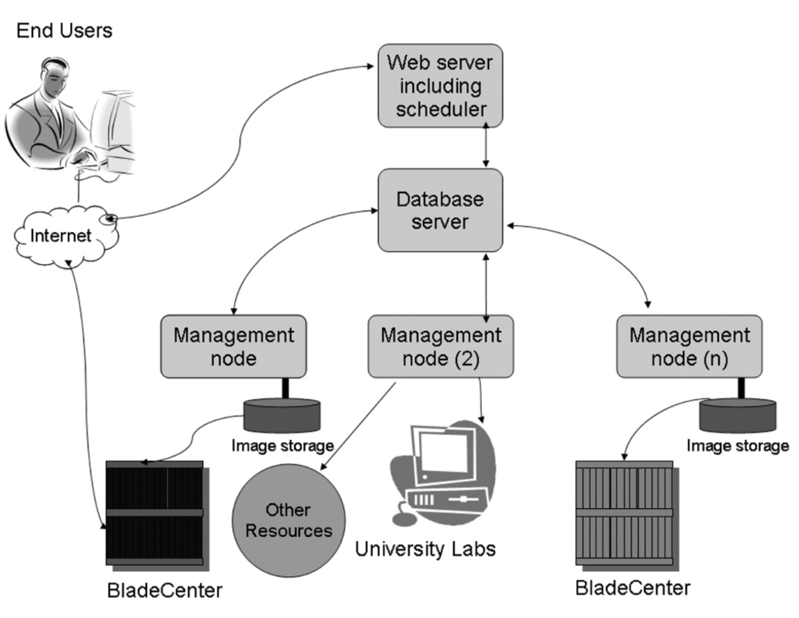

Security issues in Cloud Computing
Seminar Presentation for UEEC10
HUANG, Chaoran (Chopin) / ChopinWong01@Gmail.com
Outline
- Background
- Problems and Viable Solutions
- Conclusion and Recommendations
- Discussion
Background
What is cloud computing?
North Carolina State University Cloud Virtual Computing Lab ( )
)

Essential Characteristics
- On-demand self-service
- Broad network access
- Resource pooling
- Rapid elasticity
- Measured service
Rapid Growth

Problems
- Availability(Internet based)
- Reliability
- Security and Privacy


Security is the top issue in Cloud Computing
Alleviation Strategies
2 Existing Viable Strategies and Evaluations
- Trusted Third Party (Zissis & Lekkas 2012)
- Conceptual SLA Framework (Alhamad, Dillon & Chang 2010)
Conclusion and Recommendations
Summary and Conclusion
- Increasingly Deploying
- Security Issues
- Viable Alleviation Strategies
Recommendations
- Encryption
- Data monitoring
- Strict Access Control
- Strict Security Policy
- Staff Training
Discussion
Focus Question
The End
Thank You for watching.